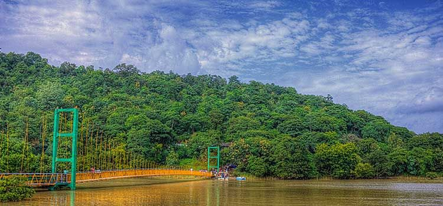
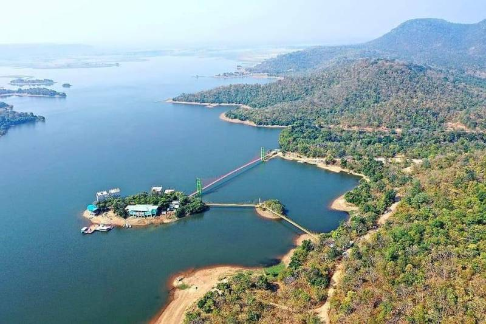

LAKNAVARAM CHERUVU

Presenting mesmerizing scenic beauty, Laknavaram Lake is undoubtedly one of the most sought after tourist attractions in Warangal. Spread over an area of 10,000 acres, this huge spread of serene water promises a perfect break, away from the chaos and pollution of cities.
Surrounded by lush green forests and captivating hillocks, this lake is sure to leave you enchanted. The twisty road, with forests on both sides and the lake makes even the journey memorable. The hanging bridge and small islands that are scattered around add further to its enthralling scenic beauty.
Not only scenic beauty, this lake is historically significant as well. A fine example of engineering excellence during Kakatiya Reign, Laknavaram Lake is a beautiful blend of history with nature.

How to reach:

By Air
The nearest airport is in hyderabad

By Train
The nearest railways is in hyderabad

By Road
laknavaram, the most famous tourist destination in Hyderabad, can be used as a landmark. A bus,cab,local rickshaw can also be taken to reach the capital.